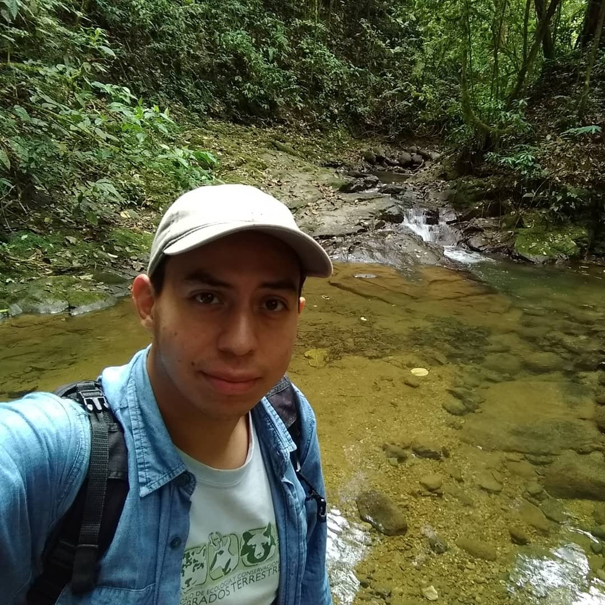
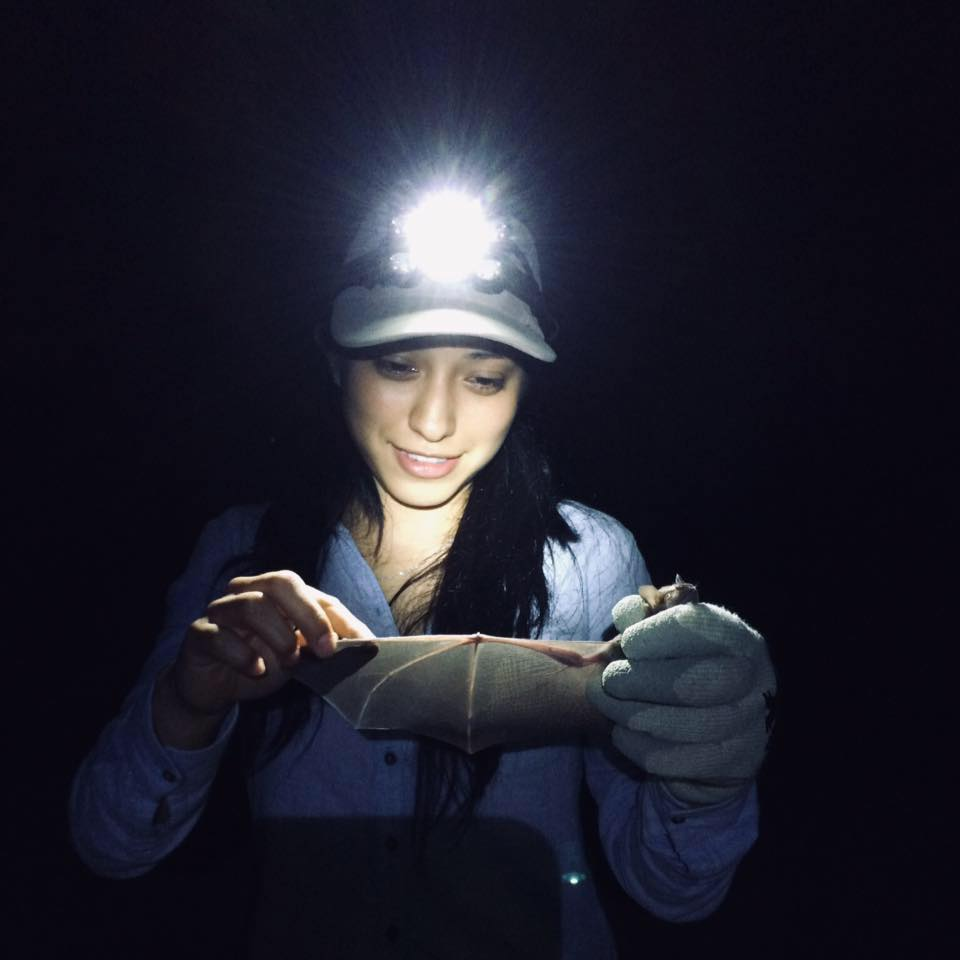

El objetivo principal del proyecto Bat friendly es incorporar prácticas amigables con los murciélagos en los sistemas de manejo y producción de los destilados de agave con el fin de rescatar esta milenaria relación entre los murciélagos y los agaves.
Descripción del Proyecto
Debido al gran crecimiento que ha sufrido la industria tequilera, durante varias décadas los productores de tequila han fomentado que los agaves, materia prima para la producción del tequila, se reproduzcan únicamente de forma asexual mediante la propagación con hijuelos. Debido a esto la estrecha relación que estos agaves tenían con los murciélagos se ha debilitado impidiendo que estas plantas sean polinizadas, en consecuencia, Agave tequilana ha ido perdiendo su diversidad genética.
Trabajo realizado por nuestros expertos
¿Dónde se hace?
En este proyecto han participado productores de mezcal de Jalisco, Michoacán y Oaxaca
¿Qué se hace?
Para poder convertirse en productores Bat friendly, las empresas de tequila y mezcal que colaboran en el proyecto deben dejar florecer aproximadamente el 5% de los agaves de sus cultivos maduros en lugar de procesarlos. De esta manera los murciélagos pueden alimentarse del néctar y el polen de estas flores y al mismo tiempo las polinizan, fomentando la recombinación de información genética y produciéndose semillas. A todas las empresas participantes se les otorga el distintivo Bat friendly, un holograma que distingue su producción como amigable con los murciélagos.
Participantes

Marco Antonio Reyes Guerra
Marisol Martínez Bautista

Belen Saraith Pérez
Marisol Tiburcio
Alfredo Ortega
Resultados
El proyecto Bat friendly comenzó a trabajar en el año 2016 y durante su primer año se colaboró con tres marcas de tequila y una de mezcal. A día de hoy, el proyecto ha trabajado con tres marcas de mezcal de Michoacán, una en Oaxaca y 6 marcas de tequila de Jalisco.
En los predios donde se cultivan agaves para producir tequila se han registrado murciélago magueyero menor (Leptonycteris yerbabuenae), murciélago lengüeton (Glossophaga soricina), murciélago trompudo mexicano (Choeronycteris mexicana) y murciélago rabón de Geoffroy (Anoura geoffroyi). Por su parte, en los predios donde se cultivan agaves para producir mezcal se han registrado murciélago magueyero mayor (Leptonycteris nivalis), murciélago magueyero menor (Leptonycteris yerbabuenae), murciélago trompudo mexicano (Choeronycteris mexicana), murciélago rabón de Geoffroy (Anoura geoffroyi), murciélago de charreteras menor (Sturnira parvidens), Murciélago de líneas blancas (Chiroderma salvini) y Murciélago lengüetón (Glossophaga commissarisi).
De forma paralela, se ha colaborado con organizaciones como Bioconciencia y GIZ para la elaboración diversos materiales para capacitación y divulgación dirigidos tanto a productores de tequila y mezcal como al público en general.